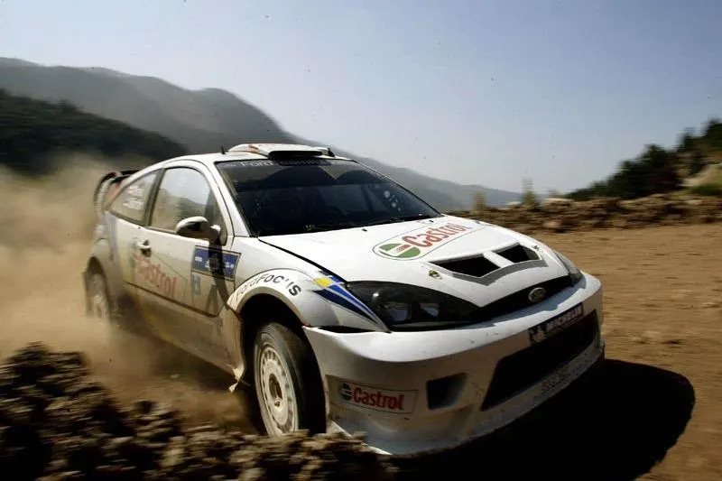
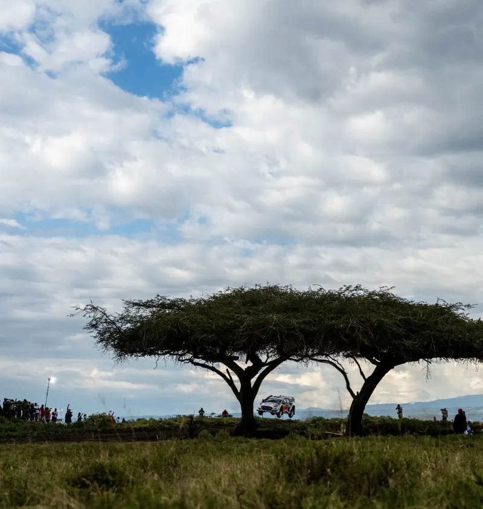
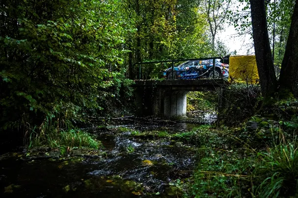

2026: The WRC Season in Numbers
The 2026 WRC season came to an end following the end of Rally Italia Sardegna. The final season of the Rally1 regulations as we know them was a thriller, with the champion being decided on quite literally, the final corner, of the last stage, of the…

How will road sweeping affect drivers in Sardegna? An Analysis
Following the cancellation of Rally Saudi Arabia, Rally Italia Sardegna will play host to the final round of the 2026 WRC season. Provided the outcome of the rally is not determined by punctures or mechanical issues, the starting order will…

How often does the fastest driver actually win in the WRC?
How often does the fastest driver in a rally actually win in the end? It's a simple question, but it's quite tricky when you think about it. Is the winner always the fastest in a rally? How has this changed through the years? In other words, who…

2025: The WRC Season in Numbers
With the 2025 season reaching its conclusion, we take a deep dive to look at how each driver and team performed across the year. The Powerslide Stats Season Review is back and it's nerdier than ever!

A Look Back at the 2025 ERC Season
The European Rally Championship season drew to a close in Croatia this past weekend, with Miko Marczyk emerging victorious.

The R5 Class: The Story So Far
We take a deep dive in all R5/Rally2 cars, and how they've performed in international competitions since 2013, as well seeing who the representative GOATs are!

Powerslide Stats Centre: The Story of the 2017 WRC Season
The 2017 WRC Season was the start of a new era for the sport. New and exciting cars gave us a modern classic. Let's take a deep dive to see how it unfolded, using stats and more.

The R5 Class: The Story So Far
Welcome to the R5 class history, a series where we will be taking a look at the cars in the R5/Rally2 class, and how they performed in the most competitive of championships, as well as what drivers performed the best in them. I have put together an…

Powerslide Stats Centre: WRC 2025 mid-season review
We’re halfway through the 2025 WRC season, and there’s already plenty to talk about. Just like last year, we’re taking a closer look at who’s been the fastest, who’s been the most consistent, and which drivers are stepping up—or slipping…

2003: A look back at the best WRC season of all time!
On this day 21 years ago, my favourite WRC season of all time concluded in Wales. Petter Solberg won the 2003 WRC Championship, in one of the best seasons this sport has ever seen. Across 14 rallies we saw 5 different drivers lead the championship,…

Powerslide Stats Centre: WRC 2024 mid-season review
Dimitris gives us a very detailed analysis of every driver's season so far, using advanced stats, a first in the WRC!

Analyzing the Drivers' Pace in the 2023 WRC Season
The 2023 WRC history is now in the history books. Kalle Rovanpera was the champion, with the Finn claiming his 2 nd consecutive championship crown ahead of teammate Elfyn Evans. But were these two indeed the fastest drivers this season? Tha